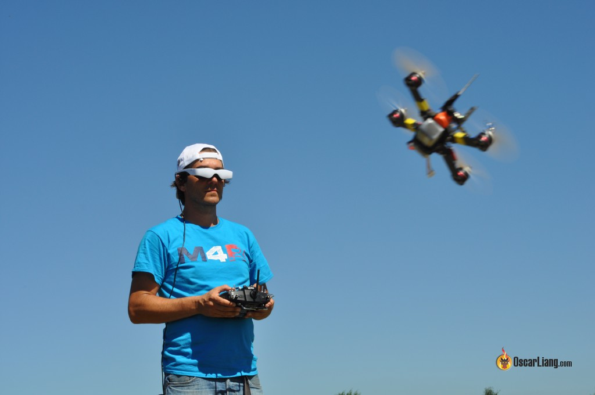

Building and Flying Fpv Drones
Over the past few years, I have built/programmed and have mastered flying Fpv Drones. An Fpv drone is a (First Person View) Drone. This means that you are wearing a pair of video goggles, and the drone has a live feed video camera in the front of it. Everything that the drone see's, you see. It is a very crazy type of feeling when you are flying one of these. They are able to reach very high speeds (speeds vary depending on your personal building preferences). This website getFpv.com helped me out A LOT when I was getting started. They have everything you need to get started building your own drone. You can even buy drones that are already built, if you choose not to build your own. Either way, I highly recommend visiting their website. Another great form of education is from a guy named "MR. Steele". He is very well known in the Fpv community for his amazing skill.Visit his youtube channel, Mr.Steele, to see some crazy footage of him flying his drones. This will give you a feeling of what it's like to fly one of these machines.